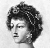

Collective Biographies of WomenAn Annotated Bibliography
Alison Booth
921.
Wyzewa, Teodor de, and C. H. Jeaffreson. Some Women, Loving or Luckless. London and New York: Lane, 1909; 1919.
Search OCLC WorldCat for this title.
Search Google Books for this title.
Wyzewa, Teodor de, and C. H. Jeaffreson. Some Women, Loving or Luckless. London and New York: Lane, 1909; 1919.
TOC: The Princess Sophia Dorothea and Philip von Königsmark; Queen Caroline Matilda and John Frederick Struensée; Queens in Profile; Great Ladies and Bourgeoises; Authors Wives and Literary Women.
-
Carolina Matilda, Queen of Denmark
-
Sophia Dorothea of Zell
-
Catherine Howard, Queen of Henry VIII
-
Mary Queen of Scots
-
Mary of Modena
-
The Queen of Etruria
-
Lady Jean Douglas
-
Fanny Burney
-
Mary Wollstonecraft Godwin
Search OCLC WorldCat for this title.
Search Google Books for this title.